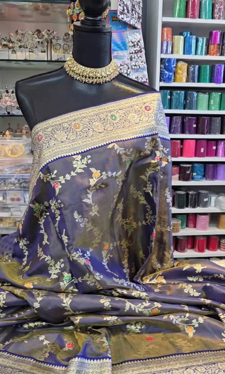

01 / LUMINOUS
The Soft Edit
A gentle palette with ornate detailing.
NAFISA BOUTIQUE · BRAMPTON, CANADA
A study of texture, drape, colour and detail. Explore selected pieces from the boutique collection.
A gentle palette with ornate detailing.

Expressive print and rich borders.

A confident take on a timeless drape.

Deep tones and intricate finish.

Subtle colour with delicate embellishment.

A luminous statement for special moments.